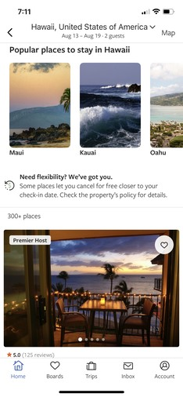
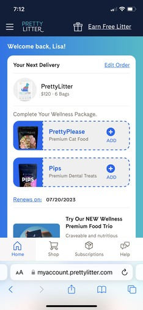

Visual Balance
VRBO
VRBO.com The VRBO mobile website's visual design shows a balanced composition, incorporating a somewhat symmetrical layout and uniform use of elements throughout the page. The website has distinct sections that are arranged in a structured and balanced manner, presenting an appropriate balance of text, images, and white space in each section. This creates a sense of stability and harmony, enabling the viewer's eye to glide smoothly across the page. Additionally, the layout uses a grid structure and neat typography to further enhance the page's visual balance. The website also utilizes color and contrast to create a visual hierarchy, with crucial information given more weight through the use of larger font sizes and bolder colors, accentuating their significance. Overall, the VRBO website's visual balance is achieved through a thoughtful and cohesive layout, which provides an aesthetically pleasing and unified user experience.
Color
T-Mobile
T-Mobile.comThe T-Mobile homepage effectively utilizes the design principle of color to convey its brand message and create a visually compelling user experience. The dominant color on the page is T-Mobile's signature magenta, which immediately grabs the viewer's attention and reinforces the brand's identity. Additionally, the page uses a variety of complementary colors, such as blue and white, which help to create contrast and balance on the page. These colors are used strategically to highlight important information and draw the viewer's eye to specific areas of the page. On top of that, the use of color gradients and textures adds depth and dimension to the page, making it more engaging and visually appealing. The T-Mobile homepage is an excellent example of how the strategic use of color can enhance a website's brand identity and create a pleasant and dynamic user experience.
Consistency
Pretty Litter
PrettyLitter.com The PrettyLitter website exemplifies a well-executed application of the design principle of consistency, which provides a seamless and compelling user experience. The website maintains a consistent visual design, incorporating uniform color schemes, typography, and imagery that reinforce the brand's identity. In addition, the layout and positioning of design elements are consistent throughout the website, creating a clear hierarchy of information that is effortless to navigate for the viewer. The messaging across the website is also consistently delivered, establishing a coherent brand voice that assists the viewer in comprehending the product's value proposition. The use of consistency in design and messaging cultivates a sense of trust and professionalism with the viewer, establishing the brand's authority in the market. Overall, PrettyLitter's effective use of consistency as a design principle contributes to a coherent and engaging user experience, reinforcing the brand's identity and delivering a unified message through the website's design.